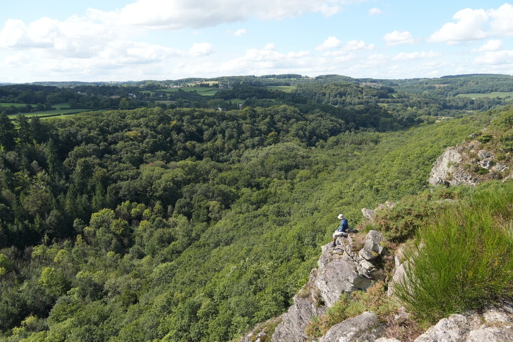

North-West France
Note: this trip is a continuation of my journey to Polynesia
When I was booking flights from Paris to Polynesia back in December, I noticed that my return flight was landing on a Thursday. So I figured - why not extend my vacation until the end of the weekend? That's why I booked my flight from Paris to Krakow for Sunday instead. This is how the idea for a short epilogue trip around France came to be - just about 4 days.
Unfortunately, the very next day I slightly regretted my decision because I realized I could've spent those 4 days in San Francisco instead - which, for me, is a much more interesting and unusual destination. But sadly, the airline didn't allow me to change the return date, not even for an extra fee. So, France it was. For the first two months, I had ambitious plans to drive around all sorts of places in those four days - solo, of course. At some point in spring, I told my friend Mateusz (not the Mateusz from Canada/Namibia/Nepal), and he said he'd be interested in joining. He had to fight a bit to get the time off, but after a few months it was all confirmed. Since I was already mentally exhausted from planning two weeks in Polynesia, we decided Mateusz would organize this part of the trip - and I trusted him completely to plan us an amazing time. The plan was to spend one day in Paris and then take a short road trip through Normandy and Brittany.
As you may have read in the Polynesia recap, our plan didn't exactly go as expected - because I messed up the dates of the return flight. On the way back from Polynesia, my layover in San Francisco ended up being a day later than I thought, so Mateusz had to spend that first day in Paris alone. I didn't arrive until the following day.
Mateusz greeted me at the airport with baguettes - it was my first time seeing someone I knew in two weeks. Because of the delay caused by my mistake, we had to rush straight to the train and didn't even manage to see the Eiffel Tower. We quickly picked up our rental car and hit the road toward Omaha Beach. We arrived around sunset. We spent about half an hour there and, to be honest, the place was a bit disappointing. For such a significant and popular site, the infrastructure was quite weak - the monuments didn't really reflect the gravity of what happened there, and there wasn't even a proper museum (only a private one). Still, imagining the horror that people lived through there was deeply moving - it must've been absolutely terrifying. We walked along the beach for a bit and then headed to our hotel.
1) Un on the airport 2) Omaha beach
The next morning, we went to Mont-Saint-Michel - a stunning island monastery that gets surrounded by water during high tide, and during low tide you can walk around it on the sand. We were there during low tide, so we got to walk all around. It's honestly one of the best places I've seen in Europe, and I highly recommend it to everyone. The area around it is full of green fields with grazing sheep, and there's a convenient walkway to the island. The abbey itself is amazing - narrow streets, old houses, atmospheric towers and stone walls. It really feels like stepping back into medieval times. The interior is also great and definitely worth visiting.
1) Street inside Mont-Saint-Michel 2) Inside the church 3) Views from the balcony
We walked through every street, explored the inside, took photos, and grabbed some souvenirs. We walked back through the green sheep-dotted pastures to our car. Then we headed to the town of Dinan, which is also a historic little place full of beautiful medieval streets and buildings. It's hard to believe it's not a movie set for a medieval film. We explored a bit, had something to eat, and returned to our base town - Saint-Malo.
1) Us in front of Mont-Saint-Michel 2) Sheeps 3) City of Dinan
Saint-Malo is a very pleasant town, with small oceanfront cliffs we explored right after arriving from Dinan. Later, we headed into the old town, which is surrounded by massive walls you can walk along while admiring views of the ocean and city. Inside the walls are charming townhouses, cafés, and restaurants. We spent some time there and headed to the hotel for the night.
1) Path to the cliffs in Saint-Malo 2) Me on the walls of Old Town 3) Walls of Old Town
The next day, we ventured into other parts of northwestern France. First, we stopped at a large menhir called “Menhir de Champ-Dolent”. As kids, we watched a lot of Asterix and Obelix, so seeing a menhir was a fun little moment for us. Then we went to a small scenic park with cool rock formations, cliffs, and forest views - also plenty of charming walking paths. We had lunch and coffee at a nearby café and took a short walk. After a short rest, we drove to Mont Ormel hill, where General Maczek fought the Germans during WWII. I had a bit of a parkour fail there - my flip off a tank didn't go as planned, so I don't have the best memories of that place. Finally, we returned to the town of Falaise for our overnight stay.

 1) Menhir 2,3) Scenic park 4,5) Mont Ormel hill
1) Menhir 2,3) Scenic park 4,5) Mont Ormel hill
The next morning, we had breakfast in our apartment and then drove back to Paris. We spent the whole time on the highway, heading to the car rental return. We dropped off the car and boarded our flight to Krakow. For me, it was the end of a three-week adventure - the end of my first-ever solo trip and my visit to the dream destination I'd longed to see for years. So yeah, the return was definitely emotional and highly anticipated. Unfortunately, two speeding tickets from the French highways were waiting for us back home.
This little France trip was a really nice and interesting way to wrap up one of the biggest journeys of my life. I spent four lovely days with my friend Mateusz and would definitely like to go back someday - because I really enjoyed France. The charming towns and beautiful countryside - it's truly peaceful, pretty, and carefree. It's a bit of a shame that I didn't get to see Paris properly - no Eiffel Tower, no Notre Dame - but in the end, I'm happy with how it all turned out. I didn't miss out on more than just Paris.
I'm incredibly grateful for everything I got to experience there.
Peace, Jakub